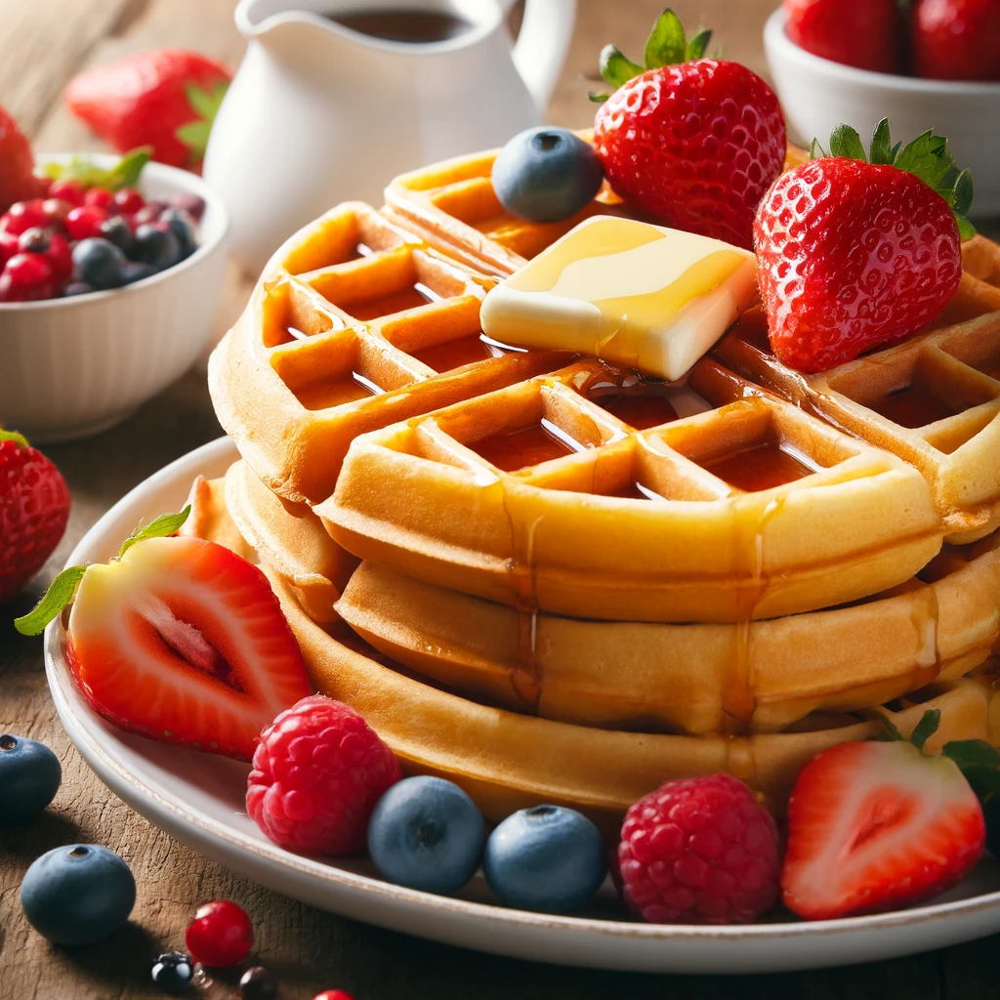

Waffles

Description of Recipe
Delight in the comfort of homemade waffles with this easy and versatile recipe. Start by blending smooth batter from fresh ingredients, ensuring each waffle turns out golden and crispy.
Serve these heartwarming waffles with a dollop of creamy butter and a generous pour of maple syrup, or customize with your favorite toppings like fruit or chocolate chips for a personal touch.
Ingredients
- 2 cups all-purpose flour
- tablespoons sugar
- 1 tablespoon baking powder
- 2 teaspoon salt
- 2 eggs
- 1 3/4 cups milk
- 1/2 cup vegetable oil
- 1 teaspoon vanilla extract
Steps
- In a large bowl, whisk together the flour, sugar, baking powder, and salt.
- In another bowl, beat the eggs and then add the milk, vegetable oil, and vanilla extract; mix well.
- Pour the wet ingredients into the dry ingredients and stir until just combined. Be careful not to overmix; some small lumps are okay
- Preheat your waffle iron according to manufacturer's instructions. When hot, spray with non-stick cooking spray or lightly brush with oil.
- Pour the batter onto the hot waffle iron and cook according to the manufacturer's instructions until the waffles are golden brown and crispy.
- Serve hot with your choice of toppings such as syrup, fresh berries, or whipped cream.